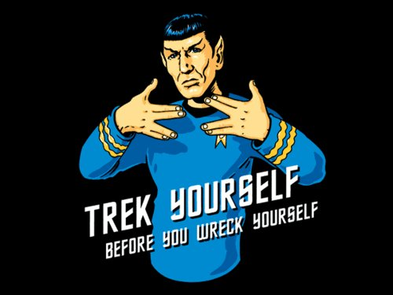
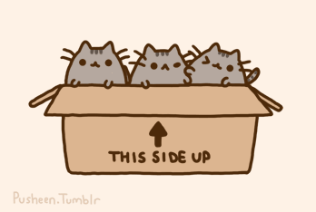
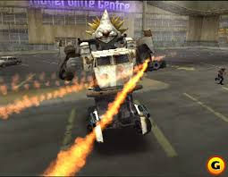
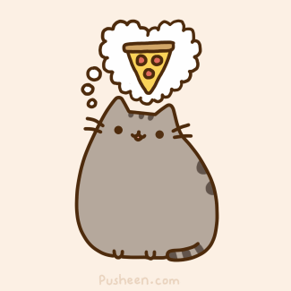
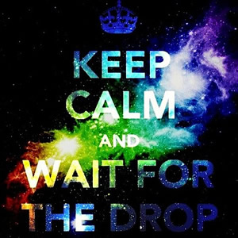
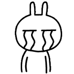
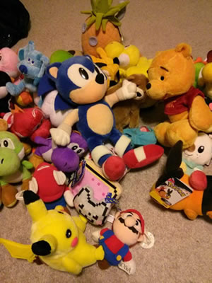
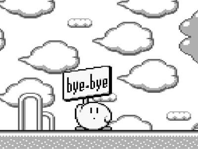

I'm not sure what that button does, but it looks powerful. – Tallyn
Once upon a time, there was a Tallyn & Rachel. There were some things that happened. Rachel eavesdropped on music Tallyn listened to and fangirled over Spock. Tallyn, oft begrudgingly replied to Rachel's emails, said things on Lync, and broke servers.
Tallyn wanted to live in a box and remember ISU forever. So Rachel helped.
Video games and pizza were always on Tallyn & Rachel's minds...and sometimes music things.
  Sometimes Tallyn couldn't sleep at night bc.
...and probs bc demoscenes. BYTE CODE TRACKER C ASSEMBLY 8-BIT 64 K ALL THE THINGS. How do I even words? Time to learn Hungarian.
OBLIGATORY iOS THING.
So, next time things are POOP or SAD.
Nap with Sonic and think of happy Kirbys.
 TO BE CONTINUED!?!?